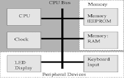

LINKS:
- mainbage
- meaningofcomputerarchitecture
- Instruction set architecture
- Designgoals
- Performance
Performance:
Modern computer performance is often described in instructions per cycle (IPC), which measures the efficiency of the architecture at any clock frequency; a faster IPC rate means the computer is faster. Older computers had IPC counts as low as 0.1 while modern processors easily reach near 1. Superscalar processors may reach three to five IPC by executing several instructions per clock cycle.[citation needed]
Counting machine-language instructions would be misleading because they can do varying amounts of work in different ISAs. The "instruction" in the standard measurements is not a count of the ISA's machine-language instructions, but a unit of measurement, usually based on the speed of the VAX computer architecture.
Many people used to measure a computer's speed by the clock rate (usually in MHz or GHz). This refers to the cycles per second of the main clock of the CPU. However, this metric is somewhat misleading, as a machine with a higher clock rate may not necessarily have greater performance. As a result, manufacturers have moved away from clock speed as a measure of performance.
Other factors influence speed, such as the mix of functional units, bus speeds, available memory, and the type and order of instructions in the programs.
There are two main types of speed: latency and throughput. Latency is the time between the start of a process and its completion.
